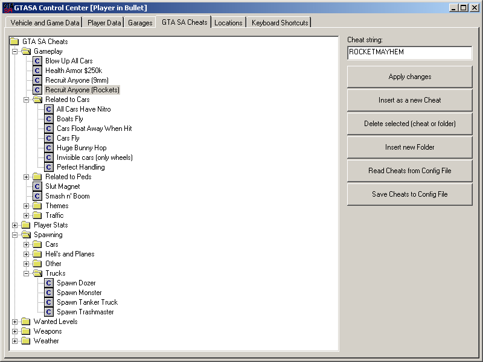
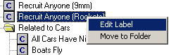
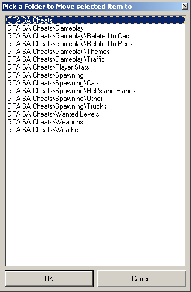

The GTA San Andeas PC version has over 70 cheats that you can type-in during game play to activate / deactivate.
This control center section is for organizing these cheats in a readable tree structure. You can also create your own cheat combinations by entering the cheat codes after each other in Cheat String textbox, and giving the combination a new name that you can select on Keyboard Shortcuts page to assign to a key.
This section is only to assist you on entering the GTA SA internal cheats during gameplay. So the cheat-insertion works only during gameplay using console commands. The selected cheat string gets typed into the game as if you were typing it using the keyboard. Please note that, as the cheat strings get inserted to the keyboard, the control keys can also get pressed. So if 'C' is assigned to 'Croach', and you insert the cheat 'Recruit anyone (Rockets)' cheat 'ROCKETMAYHEM', the 'C' gets also pressed, and player croaches. As you can also find in internet, there are several key combinations that activate the same cheat. (ie. 'ZSOXFSQ' activates also the 'Recruit anyone (Rockets)' cheat. So some of the cheats are listed more than once in the treeview.
As with other 2 treeviews in the control center, you can edit the label of selected cheat or folder using the right-click context menu:

If you select 'Move to folder' from the context menu, a window with all available folders will be shown for you to select:

You can also move folders including all sub-elements to other folders. You can also insert a new folder, or delete selected folder or cheat from the list.
On selecting a cheat from treeview, the cheat-string is shown in the relevant textbox. You can edit this, and then click on 'Apply changes' to apply your changes to the selected cheat, click on 'Insert as a new cheat' to create a new entry in the treeview. You can then edit the newly generated label. After changing cheats, or the folder assignments, please click on 'save changes to config file' to save changes, or click on 'read cheats from config file' to revert to last saved. If you have changed any of the settings, but have not saved, upon exiting the control center you will be asked if you would like to save configuration changes. Select 'yes' to save all changes.